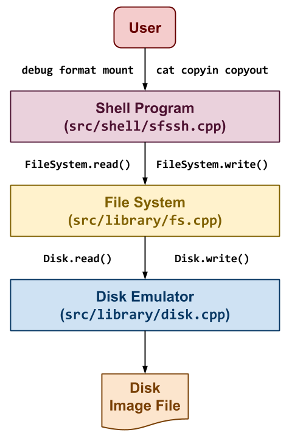

Introduction
The FileSystem is a layer of abstraction between the Storage Media and the Operating System. Without a FileSystem, the data stored in any storage media will be just a large chunk of bytes. FileSystem provide the interface to access and control the data. They do so by separating the data into pieces and labeling them for better management and operability. There are many different kinds of FileSystem available like Disk-Based, Network-Based, and Virtual based on the types of their usage.
Here, we provide a simple implementation of a Disk-Based FileSystem that is persistent across the boot. The shell to access the FileSystem and the Disk emulator was pre-implemented by the University of Notre Dame. Our task was to build upon that and implement the FileSystem layer and fill the gap between Shell and the Disk emulator.
Features
- Access to read/write any number of bytes from the disk.
- Disks can be only read/written in blocks of 4KB.
- FileSystem provided abstraction to the user by handling blocks and allowing them to access/write any bytes of data.
- FileSystem makes the tradeoff between performance and storage for the users.
- Format the disk and initialize a new FileSystem.
- Most of the FileSystem written on the disk contain magic numbers to validate it.
- FileSystem helps the user by accessing the data at a granularity of 4KB blocks and creating a fresh copy of FileSystem on the disk.
- The number of blocks for metadata and storage purposes are dependent on the type of FileSystem used.
- Our FS uses 1 block for storing MetaData, 10% blocks for storing Inodes, 1% blocks for storing Directories & Tables and the rest of the blocks as DataBlocks which are used for storing raw data.
- Debug the current FileSystem and check validity.
- FileSystem provides a method to debug the data stored on the disk and read the metadata.
- Validity checks are performed by checking the Magic number and reading the MetaData.
- Mount the Disk and read/write inodes.
- Our FileSystem provides a method to mount the disk and store the metadata in Memory for faster access and caching.
- We provide methods to read/write the data by accessing Inodes directly or by using Directories & Files.
Additional-Features
- Extended inode & block layer to include Directories & Files as well.
- We created structures to store Directories directly into 4KB blocks.
- Each File and Directory are labelled with name and can be accessed from the root directory.
- Each File & Directory are stored as table entries into the parent directory.
- We faced a tradeoff between No. of Directories per Block vs No. of Entries per Directory, and we selected the values as 8 and 7 respectively.
- Implemented several Linux shell commands.
- Linux shell commands for directories includes - ls, cd, mkdir, rmdir, stat
- Linux shell commands for files include - touch, copyin, copyout, rm.
- Commands for password protection include - password change, password set and password remove.
- Added Security layer to encrypt and decrypt the disk.
- We implemented sha256 encryption for storing passwords on the disk.
- The main question we faced was to decide where to store the password. So, we decided to store it in the Superblock.
- Only password hash is stored, which can be compared with later to validate the user.
- Functions like debug and mount cannot be used without opening the lock, which inherently restricts other functions to be accessed.
Future-Aspects
- Extend support to Devices, Networks and Pipes
- Add Caching and Logging layers to make FileSystem more efficient.
- Add Spin-locks and Mutexes for multiprocessor support.
- Upgrade security to not only encrypt passwords but to also encrypt the data.
Results
- We were able to successfully implement SimpleFS and were able to pass all the required tests.
- Along with it, we added a security layer before the disk mount stage for secure access to the disk.
- We were also able to add Directories & Files support for better and easier user access.
Refrences